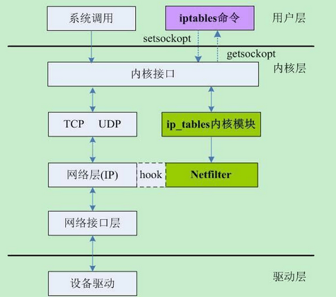

command
find
找出文件后求和 find vipkid/media/* -mtime -1 | xargs du -sm | awk '{sum +=$1}END{print sum}' 找出空目录或空文件 find . -empty 列出当前目录及子目录下所有文件和文件夹 find . 在/home目录下查找以.txt结尾的文件名 find /home -name "*.txt" 同上，但忽略大小写 find /home -iname "*.txt" 当前目录及子目录下查找所有以.txt和.pdf结尾的文件 find . \( -name "*.txt" -o -name "*.pdf" \) 或 find . -name "*.txt" -o -name "*.pdf" 匹配文件路径或者文件 find /usr/ -path "*local*" 基于正则表达式匹配文件路径 find . -regex ".*\(\.txt\|\.pdf\)$" 同上，但忽略大小写 find . -iregex ".*\(\.txt\|\.pdf\)$" 找出/home下不是以.txt结尾的文件 find /home ! -name "*.txt" 根据文件类型进行搜索 find . -type 类型参数 类型参数列表： f 普通文件 l 符号连接 d 目录 c 字符设备 b 块设备 s 套接字 p Fifo 基于目录深度搜索 向下最大深度限制为3 find . -maxdepth 3 -type f 搜索出深度距离当前目录至少2个子目录的所有文件 find . -mindepth 2 -type f 根据文件时间戳进行搜索 find . -type f 时间戳 UNIX/Linux文件系统每个文件都有三种时间戳： （-atime/天，-amin/分钟）：用户最近一次访问时间,如 ls, more 等, 但 chmod, chown, ls, stat 等不会修改些时间, 使用 ls -utl 可以按此时间顺序查看; （-mtime/天，-mmin/分钟）：文件最后一次修改时间, 如 vi 保存后等, 修改时间发生改变的话, atime 和 ctime 也相应跟着发生改变 （-ctime/天，-cmin/分钟）：文件数据元（例如权限等）最后一次修改时间,如 chmod, chown 等状态时间改变但修改时间不会改变, 使用 stat file 可以查看; ---(+n)----------|----------(n)----------|----------(-n)--- (n+1)*24H前| (n+1)*24H~n*24H间 |n*24H内 -ctime -n 查找距现在 n*24H 内修改过的文件 -ctime n 查找距现在 n*24H 前, (n+1)*24H 内修改过的文件 -ctime +n 查找距现在 (n+1)*24H 前修改过的文件 注意： linux 里是不会记录文件的创建时间的，除非这个文件自创建以来没有发生改变，那么它的创建时间就 是它的最后一次修改时间。 #ls -lt /home/admin # 按修改时间顺序查看 #ls -lut /home/admin # 按访问时间顺序查看 (如果想反序查看的话需要加一个选项 -r) 搜索最近七天内被访问过的所有文件 find . -type f -atime -7 搜索恰好在七天前被访问过的所有文件 find . -type f -atime 7 搜索超过七天内被访问过的所有文件 find . -type f -atime +7 搜索访问时间超过10分钟的所有文件 find . -type f -amin +10 找出比file.log修改时间更长的所有文件 find . -type f -newer file.log 根据文件大小进行匹配 find . -type f -size 文件大小单元 文件大小单元： b —— 块（512字节） c —— 字节 w —— 字 （2字节） k —— 千字节 M —— 兆字节 G —— 吉字节 搜索大于10KB的文件 find . -type f -size +10k 搜索小于10KB的文件 find . -type f -size -10k 搜索等于10KB的文件 find . -type f -size 10k 删除匹配文件 删除当前目录下所有.txt文件 find . -type f -name "*.txt" -delete 借助-exec选项与其他命令结合使用 找出当前目录下所有root的文件，并把所有权更改为用户tom find .-type f -user root -exec chown tom {} \; 上例中，{} 用于与-exec选项结合使用来匹配所有文件，然后会被替换为相应的文件名。 找出自己家目录下所有的.txt文件并删除 find $HOME/. -name "*.txt" -ok rm {} \ ; 上例中，-ok和-exec行为一样，不过它会给出提示，是否执行相应的操作。 查找当前目录下所有.txt文件并把他们拼接起来写入到all.txt文件中 find . -type f -name "*.txt" -exec cat {} \ ;> all.txt 将30天前的.log文件移动到old目录中 find . -type f -mtime +30 -name "*.log" -exec cp {} old \ ; 找出当前目录下所有.txt文件并以“File:文件名”的形式打印出来 find . -type f -name "*.txt" -exec printf "File: %s\n" {} \ ; 因为单行命令中-exec参数中无法使用多个命令，以下方法可以实现在-exec之后接受多条命令 -exec ./text.sh {} \; 搜索但跳出指定的目录 查找当前目录或者子目录下所有.txt文件，但是跳过子目录sk find . -path "./sk" -prune -o -name "*.txt" -print find http://man.linuxde.net
date日期加减
#如：2016-10-24 11:20:30 加减 1小时 50分 time1=$(date +%s -d '2016-10-24 11:20:30') # 转换指定日期 # time1=$(date +%s) # 当前日期 time2=$((1*60*60+50*60)) #1小时 50分 timesnmp1=$(($time1+$time2)) echo $(date +"%F %T" -d "1970-01-01 UTC $timesnmp1 seconds") timesnmp2=$(($time1-$time2)) echo $(date +"%F %T" -d "1970-01-01 UTC $timesnmp2 seconds")
tar高级用法
Linux上有功能强大的tar命令，tar最初是为了制作磁带备份（tape archive）而设计的，它的作用 是把文件和目录备份到磁带中， 然后从磁带中提取或恢复文件。现在我们可以使用tar来备份数据到任何存储介质上。它是文件级备份， 不必考虑底层文件系统类别， 并且支持增量备份。 1. 部分常用选项 -z, --gzip：使用gzip工具（解）压缩，后缀一般为.gz -c, --create：tar打包，后缀一般为.tar -f, --file=：后面立刻接打包或压缩后得到的文件名 -x, --extract：解包命令，与-c对应 -p：保留备份数据的原本权限和属性 -g：后接增量备份的快照文件 -C：指定解压缩的目录 --exclude：排除不打包的目录或文件，支持正则匹配 其他 -X, --exclude-from：在一个文件中列出要排除的目录或文件（在--exclude=较多时使用） -t, --list：列出备份档案中的文件列表，不与-c、-x同时出现 -j, --bzip2：使用bzip2工具（解）压缩，后缀一般为.bz2 -P：保留绝对路径，解压时同样会自动解压到绝对路径下 -v：（解）压缩过程显示文件处理过程，常用但不建议对大型文件使用 2. 增量备份（网站）数据 许多系统（应用或网站）每天都有静态文件产生，对于一些比较重要的静态文件如果有进行定期 备份的需求，就可以通过tar打包压缩 备份到指定的地方，特别是对一些总文件比较大比较多的情况，还可以利用-g选项来做增量备份。 备份的目录最好使用相对路径，也就是进入到需要备份的根目录下 具体示例方法如下。 备份当前目录下的所有文件 # tar -g /tmp/snapshot_data.snap -zcpf /tmp/data01.tar.gz . 在需要恢复的目录下解压恢复 # tar -zxpf /tmp/data01.tar.gz -C . -g选项可以理解备份时给目录文件做一个快照，记录权限和属性等信息，第一次备份时 /tmp/snapshot_data.snap不存在， 会新建一个并做完全备份。当目录下的文件有修改后，再次执行第一条备份命令（记得修改后面的 档案文件名）， 会自动根据-g指定的快照文件，增量备份修改过的文件，包括权限和属性，没有动过的文件不会 重复备份。 另外需要注意上面的恢复，是“保留恢复”，即存在相同文件名的文件会被覆盖，而原目录下 已存在（但备份档案里没有）的， 会依然保留。所以如果你想完全恢复到与备份文件一模一样，需要清空原目录。如果有增量备份档案， 则还需要使用同样的方式分别 解压这些档案，而且要注意顺序。 下面演示一个比较综合的例子，要求： 备份/tmp/data目录，但cache目录以及临时文件排除在外 由于目录比较大（>4G），所以全备时分割备份的档案（如每个备份档案文件最大1G） 保留所有文件的权限和属性，如用户组和读写权限 # cd /tmp/data 做一次完全备份 # rm -f /tmp/snapshot_data.snap # tar -g /tmp/snapshot_data.snap -zcpf - --exclude=./cache ./ | split -b 1024M - /tmp/bak_data$(date -I).tar.gz_ 分割后文件名后会依次加上aa,ab,ac,...，上面最终的备份归档会保存成 bak_data2014-12-07.tar.gz_aa bak_data2014-12-07.tar.gz_ab bak_data2014-12-07.tar.gz_ac ... 增量备份 可以是与完全备份一模一样的命令，但需要注意的是假如你一天备份多次，可能导致档案文件名重复， 那么就会导致 备份实现，因为split依然会从aa,ab开始命名，如果一天的文件产生（修改）量不是特别大，那么 建议增量部分不 分割处理了：（ 一定要分割的话，文件名加入更细致的时间如$(date +%Y-%m-%d_%H) ） # tar -g /tmp/snapshot_data.snap -zcpf /tmp/bak_data2014-12-07.tar.gz --exclude=./cache ./ 第二天增备 # tar -g /tmp/snapshot_data.snap -zcpf /tmp/bak_data2014-12-08.tar.gz --exclude=./cache ./ 恢复过程 恢复完全备份的档案文件 可以选择是否先清空/tmp/data/目录 # cat /tmp/bak_data2014-12-07.tar.gz_* | tar -zxpf - -C /tmp/data/ 恢复增量备份的档案文件 $ tar –zxpf /tmp/bak_data2014-12-07.tar.gz -C /tmp/data/ $ tar –zxpf /tmp/bak_data2014-12-08.tar.gz -C /tmp/data/ ... 一定要保证是按时间顺序恢复的，像下面文件名规则也可以使用上面通配符的形式 如果需要定期备份，如每周一次全备，每天一次增量备份，则可以结合crontab实现。 3. 备份文件系统 备份文件系统方法有很多，例如cpio, rsync, dump, tar，这里演示一个通过tar备份整个Linux 系统的例子，整个备份与恢复过程与上面类似。 首先Linux（这里是CentOS）有一部分目录是没必要备份的，如/proc、/lost+found、/sys、/mnt、 /media、/dev、/proc、/tmp， 如果是备份到磁带/dev/st0则不必关心那么多，因为我这里是备份到本地/backup目录，所以也需要 排除，还有其它一些NFS或者 网络存储挂载的目录。 创建排除列表文件 # vi /backup/backup_tar_exclude.list /backup /proc /lost+found /sys /mnt /media /dev /tmp $ tar -zcpf /backup/backup_full.tar.gz -g /backup/tar_snapshot.snap --exclude-from=/backup/tar_exclude.list / 4. 注意 使用tar无论是备份数据还是文件系统，需要考虑是在原系统上恢复还是另一个新的系统上恢复。 tar备份极度依赖于文件的atime属性， 文件所属用户是根据用户ID来确定的，异机恢复需要考虑相同用户拥有相同USERID 备份和恢复的过程尽量不要运行其他进程，可能会导致数据不一致 软硬连接文件可以正常恢复
检查Linux服务器性能
如果你的Linux服务器突然负载暴增，告警短信快发爆你的手机，如何在最短时间内找出Linux性能问题 所在？来看 Netflix性能工程团队的这篇博文，看它们通过十条命令在一分钟内对机器性能问题进行诊断。 概述 通过执行以下命令，可以在1分钟内对系统资源使用情况有个大致的了解。 uptime dmesg | tail vmstat 1 mpstat -P ALL 1 pidstat 1 iostat -xz 1 free -m sar -n DEV 1 sar -n TCP,ETCP 1 top 其中一些命令需要安装sysstat包，有一些由procps包提供。这些命令的输出，有助于快速定位性能 瓶颈，检查出所有资源 （CPU、内存、磁盘IO等）的利用率（utilization）、饱和度（saturation）和错误（error）度量 ，也就是所谓的USE方法。 下面我们来逐一介绍下这些命令，有关这些命令更多的参数和说明，请参照命令的手册。 uptime $ uptime 23:51:26 up 21:31, 1 user, load average: 30.02, 26.43, 19.02 这个命令可以快速查看机器的负载情况。在Linux系统中，这些数据表示等待CPU资源的进程和阻塞在 不可中断IO进程（进程状态为D） 的数量。这些数据可以让我们对系统资源使用有一个宏观的了解。 命令的输出分别表示1分钟、5分钟、15分钟的平均负载情况。通过这三个数据，可以了解服务器负载 是在趋于紧张还是区域缓解。 如果1分钟平均负载很高，而15分钟平均负载很低，说明服务器正在命令高负载情况，需要进一步 排查CPU资源都消耗在了哪里。 反之，如果15分钟平均负载很高，1分钟平均负载较低，则有可能是CPU资源紧张时刻已经过去。 上面例子中的输出，可以看见最近1分钟的平均负载非常高，且远高于最近15分钟负载，因此我们 需要继续排查当前系统中有什么 进程消耗了大量的资源。可以通过下文将会介绍的vmstat、mpstat等命令进一步排查。 dmesg | tail $ dmesg | tail [1880957.563150] perl invoked oom-killer: gfp_mask=0x280da, order=0, oom_score_adj=0 [...] [1880957.563400] Out of memory: Kill process 18694 (perl) score 246 or sacrifice child [1880957.563408] Killed process 18694 (perl) total-vm:1972392kB, anon-rss:1953348kB, file-rss:0kB [2320864.954447] TCP: Possible SYN flooding on port 7001. Dropping request. Check SNMP counters. 该命令会输出系统日志的最后10行。示例中的输出，可以看见一次内核的oom kill和一次TCP丢包。 这些日志可以帮助排查性能问题。 千万不要忘了这一步。 vmstat 1 $ vmstat 1 procs ---------memory---------- ---swap-- -----io---- -system-- ------cpu----- r b swpd free buff cache si so bi bo in cs us sy id wa st 34 0 0 200889792 73708 591828 0 0 0 5 6 10 96 1 3 0 0 32 0 0 200889920 73708 591860 0 0 0 592 13284 4282 98 1 1 0 0 32 0 0 200890112 73708 591860 0 0 0 0 9501 2154 99 1 0 0 0 32 0 0 200889568 73712 591856 0 0 0 48 11900 2459 99 0 0 0 0 32 0 0 200890208 73712 591860 0 0 0 0 15898 4840 98 1 1 0 0 ^C vmstat(8) 命令，每行会输出一些系统核心指标，这些指标可以让我们更详细的了解系统状态。 后面跟的参数1，表示每秒输出一次统计信息， 表头提示了每一列的含义，这几介绍一些和性能调优相关的列： r：等待在CPU资源的进程数。这个数据比平均负载更加能够体现CPU负载情况，数据中不包含等待IO 的进程。如果这个数值大于机器CPU核数， 那么机器的CPU资源已经饱和。 free：系统可用内存数（以千字节为单位），如果剩余内存不足，也会导致系统性能问题。下文介绍 到的free命令，可以更详细的了解系统 内存的使用情况。 si, so：交换区写入和读取的数量。如果这个数据不为0，说明系统已经在使用交换区（swap）， 机器物理内存已经不足。 us, sy, id, wa, st：这些都代表了CPU时间的消耗，它们分别表示用户时间（user）、系统（内核） 时间（sys）、空闲时间（idle）、 IO等待时间（wait）和被偷走的时间（stolen，一般被其他虚拟机消耗）。 上述这些CPU时间，可以让我们很快了解CPU是否出于繁忙状态。一般情况下，如果用户时间和 系统时间相加非常大，CPU出于忙于执行指令。 如果IO等待时间很长，那么系统的瓶颈可能在磁盘IO。 示例命令的输出可以看见，大量CPU时间消耗在用户态，也就是用户应用程序消耗了CPU时间。这 不一定是性能问题，需要结合r队列，一起分析。 mpstat -P ALL 1 $ mpstat -P ALL 1 Linux 3.13.0-49-generic (titanclusters-xxxxx) 07/14/2015 _x86_64_ (32 CPU) 07:38:49 PM CPU %usr %nice %sys %iowait %irq %soft %steal %guest %gnice %idle 07:38:50 PM all 98.47 0.00 0.75 0.00 0.00 0.00 0.00 0.00 0.00 0.78 07:38:50 PM 0 96.04 0.00 2.97 0.00 0.00 0.00 0.00 0.00 0.00 0.99 07:38:50 PM 1 97.00 0.00 1.00 0.00 0.00 0.00 0.00 0.00 0.00 2.00 07:38:50 PM 2 98.00 0.00 1.00 0.00 0.00 0.00 0.00 0.00 0.00 1.00 07:38:50 PM 3 96.97 0.00 0.00 0.00 0.00 0.00 0.00 0.00 0.00 3.03 [...] 该命令可以显示每个CPU的占用情况，如果有一个CPU占用率特别高，那么有可能是一个单线程应用程序引起的。 pidstat 1 $ pidstat 1 Linux 3.13.0-49-generic (titanclusters-xxxxx) 07/14/2015 _x86_64_ (32 CPU) 07:41:02 PM UID PID %usr %system %guest %CPU CPU Command 07:41:03 PM 0 9 0.00 0.94 0.00 0.94 1 rcuos/0 07:41:03 PM 0 4214 5.66 5.66 0.00 11.32 15 mesos-slave 07:41:03 PM 0 4354 0.94 0.94 0.00 1.89 8 java 07:41:03 PM 0 6521 1596.23 1.89 0.00 1598.11 27 java 07:41:03 PM 0 6564 1571.70 7.55 0.00 1579.25 28 java 07:41:03 PM 60004 60154 0.94 4.72 0.00 5.66 9 pidstat 07:41:03 PM UID PID %usr %system %guest %CPU CPU Command 07:41:04 PM 0 4214 6.00 2.00 0.00 8.00 15 mesos-slave 07:41:04 PM 0 6521 1590.00 1.00 0.00 1591.00 27 java 07:41:04 PM 0 6564 1573.00 10.00 0.00 1583.00 28 java 07:41:04 PM 108 6718 1.00 0.00 0.00 1.00 0 snmp-pass 07:41:04 PM 60004 60154 1.00 4.00 0.00 5.00 9 pidstat ^C pidstat命令输出进程的CPU占用率，该命令会持续输出，并且不会覆盖之前的数据，可以方便观察系统动态。如上的输出， 可以看见两个JAVA进程占用了将近1600%的CPU时间，既消耗了大约16个CPU核心的运算资源。 iostat -xz 1 $ iostat -xz 1 Linux 3.13.0-49-generic (titanclusters-xxxxx) 07/14/2015 _x86_64_ (32 CPU) avg-cpu: %user %nice %system %iowait %steal %idle 73.96 0.00 3.73 0.03 0.06 22.21 Device: rrqm/s wrqm/s r/s w/s rkB/s wkB/s avgrq-sz avgqu-sz await r_await w_await svctm %util xvda 0.00 0.23 0.21 0.18 4.52 2.08 34.37 0.00 9.98 13.80 5.42 2.44 0.09 xvdb 0.01 0.00 1.02 8.94 127.97 598.53 145.79 0.00 0.43 1.78 0.28 0.25 0.25 xvdc 0.01 0.00 1.02 8.86 127.79 595.94 146.50 0.00 0.45 1.82 0.30 0.27 0.26 dm-0 0.00 0.00 0.69 2.32 10.47 31.69 28.01 0.01 3.23 0.71 3.98 0.13 0.04 dm-1 0.00 0.00 0.00 0.94 0.01 3.78 8.00 0.33 345.84 0.04 346.81 0.01 0.00 dm-2 0.00 0.00 0.09 0.07 1.35 0.36 22.50 0.00 2.55 0.23 5.62 1.78 0.03 [...] ^C iostat命令主要用于查看机器磁盘IO情况。该命令输出的列，主要含义是： r/s, w/s, rkB/s, wkB/s：分别表示每秒读写次数和每秒读写数据量（千字节）。读写量过大， 可能会引起性能问题。 await：IO操作的平均等待时间，单位是毫秒。这是应用程序在和磁盘交互时，需要消耗的时间， 包括IO等待和实际操作的耗时。 如果这个数值过大，可能是硬件设备遇到了瓶颈或者出现故障。 avgqu-sz：向设备发出的请求平均数量。如果这个数值大于1，可能是硬件设备已经饱和 （部分前端硬件设备支持并行写入）。 %util：设备利用率。这个数值表示设备的繁忙程度，经验值是如果超过60，可能会影响IO性能 （可以参照IO操作平均等待时间）。 如果到达100%，说明硬件设备已经饱和。 如果显示的是逻辑设备的数据，那么设备利用率不代表后端实际的硬件设备已经饱和。值得注意的是， 即使IO性能不理想， 也不一定意味这应用程序性能会不好，可以利用诸如预读取、写缓存等策略提升应用性能。 free –m $ free -m total used free shared buffers cached Mem: 245998 24545 221453 83 59 541 -/+ buffers/cache: 23944 222053 Swap: 0 0 0 free命令可以查看系统内存的使用情况，-m参数表示按照兆字节展示。最后两列分别表示用于IO 缓存的内存数，和用于文件系统页缓存 的内存数。需要注意的是，第二行-/+ buffers/cache，看上去缓存占用了大量内存空间。这是 Linux系统的内存使用策略，尽可能的利用内存， 如果应用程序需要内存，这部分内存会立即被回收并分配给应用程序。因此，这部分内存一般也 被当成是可用内存。 如果可用内存非常少，系统可能会动用交换区（如果配置了的话），这样会增加IO开销 （可以在iostat命令中提现），降低系统性能。 sar -n DEV 1 $ sar -n DEV 1 Linux 3.13.0-49-generic (titanclusters-xxxxx) 07/14/2015 _x86_64_ (32 CPU) 12:16:48 AM IFACE rxpck/s txpck/s rxkB/s txkB/s rxcmp/s txcmp/s rxmcst/s %ifutil 12:16:49 AM eth0 18763.00 5032.00 20686.42 478.30 0.00 0.00 0.00 0.00 12:16:49 AM lo 14.00 14.00 1.36 1.36 0.00 0.00 0.00 0.00 12:16:49 AM docker0 0.00 0.00 0.00 0.00 0.00 0.00 0.00 0.00 12:16:49 AM IFACE rxpck/s txpck/s rxkB/s txkB/s rxcmp/s txcmp/s rxmcst/s %ifutil 12:16:50 AM eth0 19763.00 5101.00 21999.10 482.56 0.00 0.00 0.00 0.00 12:16:50 AM lo 20.00 20.00 3.25 3.25 0.00 0.00 0.00 0.00 12:16:50 AM docker0 0.00 0.00 0.00 0.00 0.00 0.00 0.00 0.00 ^C sar命令在这里可以查看网络设备的吞吐率。在排查性能问题时，可以通过网络设备的吞吐量， 判断网络设备是否已经饱和。如示例输出中， eth0网卡设备，吞吐率大概在22 Mbytes/s，既176 Mbits/sec，没有达到1Gbit/sec的硬件上限。 sar -n TCP,ETCP 1 $ sar -n TCP,ETCP 1 Linux 3.13.0-49-generic (titanclusters-xxxxx) 07/14/2015 _x86_64_ (32 CPU) 12:17:19 AM active/s passive/s iseg/s oseg/s 12:17:20 AM 1.00 0.00 10233.00 18846.00 12:17:19 AM atmptf/s estres/s retrans/s isegerr/s orsts/s 12:17:20 AM 0.00 0.00 0.00 0.00 0.00 12:17:20 AM active/s passive/s iseg/s oseg/s 12:17:21 AM 1.00 0.00 8359.00 6039.00 12:17:20 AM atmptf/s estres/s retrans/s isegerr/s orsts/s 12:17:21 AM 0.00 0.00 0.00 0.00 0.00 ^C sar命令在这里用于查看TCP连接状态，其中包括： active/s：每秒本地发起的TCP连接数，既通过connect调用创建的TCP连接； passive/s：每秒远程发起的TCP连接数，即通过accept调用创建的TCP连接； retrans/s：每秒TCP重传数量； TCP连接数可以用来判断性能问题是否由于建立了过多的连接，进一步可以判断是主动发起的连接， 还是被动接受的连接。TCP重传可能是 因为网络环境恶劣，或者服务器压力过大导致丢包。 top $ top top - 00:15:40 up 21:56, 1 user, load average: 31.09, 29.87, 29.92 Tasks: 871 total, 1 running, 868 sleeping, 0 stopped, 2 zombie %Cpu(s): 96.8 us, 0.4 sy, 0.0 ni, 2.7 id, 0.1 wa, 0.0 hi, 0.0 si, 0.0 st KiB Mem: 25190241+total, 24921688 used, 22698073+free, 60448 buffers KiB Swap: 0 total, 0 used, 0 free. 554208 cached Mem PID USER PR NI VIRT RES SHR S %CPU %MEM TIME+ COMMAND 20248 root 20 0 0.227t 0.012t 18748 S 3090 5.2 29812:58 java 4213 root 20 0 2722544 64640 44232 S 23.5 0.0 233:35.37 mesos-slave 66128 titancl+ 20 0 24344 2332 1172 R 1.0 0.0 0:00.07 top 5235 root 20 0 38.227g 547004 49996 S 0.7 0.2 2:02.74 java 4299 root 20 0 20.015g 2.682g 16836 S 0.3 1.1 33:14.42 java 1 root 20 0 33620 2920 1496 S 0.0 0.0 0:03.82 init 2 root 20 0 0 0 0 S 0.0 0.0 0:00.02 kthreadd 3 root 20 0 0 0 0 S 0.0 0.0 0:05.35 ksoftirqd/0 5 root 0 -20 0 0 0 S 0.0 0.0 0:00.00 kworker/0:0H 6 root 20 0 0 0 0 S 0.0 0.0 0:06.94 kworker/u256:0 8 root 20 0 0 0 0 S 0.0 0.0 2:38.05 rcu_sched top命令包含了前面好几个命令的检查的内容。比如系统负载情况（uptime）、系统内存使用情况 （free）、系统CPU使用情况（vmstat）等。 因此通过这个命令，可以相对全面的查看系统负载的来源。同时，top命令支持排序，可以按照不同 的列排序，方便查找出诸如内存占用 最多的进程、CPU占用率最高的进程等。 但是，top命令相对于前面一些命令，输出是一个瞬间值，如果不持续盯着，可能会错过一些线索。 这时可能需要暂停top命令刷新， 来记录和比对数据。 总结 排查Linux服务器性能问题还有很多工具，上面介绍的一些命令，可以帮助我们快速的定位问题。 例如前面的示例输出，多个证据证明 有JAVA进程占用了大量CPU资源，之后的性能调优就可以针对应用程序进行。
ntpdate同步时间
cp /usr/share/zoneinfo/Asia/Shanghai /etc/localtime 0 */1 * * * /usr/sbin/ntpdate 202.120.2.101 >/dev/null 0 */1 * * * /usr/sbin/ntpdate 202.120.2.101 >/dev/null 2>&1 ntpdate 202.120.2.101 ntpdate s2m.time.edu.cn 阿里云 Unix类系统：time1-7.aliyun.com Windows： time.pool.aliyun.com ntp2.aliyun.com echo "*/10 * * * * /usr/sbin/ntpdate pool.ntp.org >/dev/null 2>&1" >>/var/spool/cron/root clock -w 则第一个crontab,执行失败，都不会有邮件发出， 而第二个crontab,如执行失败，会在/var/spool/mail目录或/var/spool/clientmqueue目录下生成大量的错误输出提示邮件。
wget
# wget -r -p -np -k http://xxx.edu.cn -r 表示递归下载,会下载所有的链接,不过要注意的是,不要单独使用这个参数,因为如果你要 下载的网站也有别的网站的链接, wget也会把别的网站的东西下载下来,所以要加上-np这个参数,表示不下载别的站点的链接. -np 表示不下载别的站点的链接. -k 表示将下载的网页里的链接修改为本地链接. -p 获得所有显示网页所需的元素,比如图片什么的. -E 或 --html-extension 将保存的URL的文件后缀名设定为“.html” +++++++++++++++++++++++++++++++++++++++ # wget -c -t 0 -O rhel6_x86_64.iso http://zs.kan115.com:8080/rhel6_x86_64.iso -c 断点续传 -t 0 反复尝试的次数，0为不限次数 -O rhel6_x86_64.iso 把下载的文件命名为rhel6_x86_64.iso http://zs.kan115.com:8080/rhel6_x86_64.iso 要下载的文件的网址 附：wget高级用法 wget的一些高级用法，比如另存为，后台下载，断点下载。批量下载。 增加下载尝试次数和测试下载链接是否生效。 记录下载日志，下载和排除指定类型文 件。 1、下载单个文件 wget url+filename 下载过程中同时可以看到四项信息 已经下载的比例 已经下载的大小 当前下载的速度 剩余的时间 2、使用一个大写O做参数表示另存为 wget -O save_name url 这种方法适用于对应链接中没有显式文件名的情况。 例如： wget -O xx.zip http://www.vim.org/scripts/download_script.php?src_id=7701 再用不带-O参数的下载一次。 ls -al 总计 132 drwxr-xr-x 2 root root 4096 07-12 10:43 . drwxr-xr-x 4 root root 4096 07-11 16:26 .. -rw-r--r-- 1 root root 50243 07-12 10:43 download_script.php?src_id=7701 -rw-r--r-- 1 root root 50243 07-12 10:43 xx.zip 我们发现，下载的大小都是一样。但是不带-O参数的，文件名还要转换一次。不如用-O参数方便。 mv "download_script.php?src_id=7701" yy.zip 3、指定下载速率 方法是使用wget --limit-rate wget程序默认是使用所有的带宽，如果 是在生产服务器上下载很大的文件就不可接受了。 为了避免这种情况使用--limit-rate参数 wget --limit-rate=200k http://www.openss7.org/repos/tarballs/strx25-0.9.2.1.tar.bz2 4、断点下载 使用wget -c完成未完成的下载 下载到一半需要停下来干别的事情，用^c就可以停顿住。 回来后，继续下载可以加一个-c参数。 注意：如果不加入-c，那么下载的文件会多出一个.1的后缀。 5、在后台下载 方法：加一个-b的参数 wget -b url/filename 为后台下载。下载经过写入到wget-log文件中。 用tail -f wget-log查看下载日志 6、模拟在浏览器下下载 有的网站不允许客户在非浏览器环境下下载。使用--user-agent来设置 wget --user-agent="Mozilla/5.0 (X11; U; Linux i686; en-US; rv:1.9.0.3) Gecko/2008092416 Firefox/3.0.3" URL-TO-DOWNLOAD 7、测试下载链接 方法:使用--spider 试图做计划下载时候，需要先检查一下下载链接是否有效。 wget --spider DOWNLOAD-URL 如果返回OK，则表示下载链接是正确的！ 例如： wget --spider "http://ip138.com/ips.asp?ip=58.251.193.137&action=2" Spider mode enabled. Check if remote file exists. --2010-07-12 11:36:32-- http://ip138.com/ips.asp?ip=58.251.193.137&action=2 正在解析主机 ip138.com... 221.5.47.136 Connecting to ip138.com|221.5.47.136|:80... 已连接。 已发出 HTTP 请求，正在等待回应... 200 OK 长度：7817 (7.6K) [text/html] Remote file exists and could contain further links, but recursion is disabled -- not retrieving. 8、增加尝试次数 方法：--tries=1000 如果网速有问题，下载大文件的时候可能会发生错误， 默认wget尝试20次链接。 如果尝试75次，可以 wget --tires=75 DOWNLOAD-URL 9、下载多个文件使用wget -i 将多个下载链接写入到一个download-file-list.txt文件中，而后用： wget -i download-file-list.txt 10、下载整站 方法：用--mirror参数 当你要下载一个完整站点并实现本地浏览的时候， wget --mirror -p --convert-links -P ./LOCAL-DIR WEBSITE-URL 参数讲解： --mirror：设置这个参数用来建立本地镜像 -p：下载所有html文件适合显示的元素 --convert-links：下载完成后，将文档链接都转换成本地的 -P ./LOCAL-DIR：保存所有的文件和目录到指定文件夹下 11、下载时候禁止下载指定类型的文件 例如下载站点时候，不打算下载gif动画图片。 wget --reject=gif WEBSITE-TO-BE-DOWNLOADED 12、记录下载日志 方法：使用小写字母o wget -o xx.html.log -O xx.html "http://ip138.com/ips.asp?ip=58.251.193.137& action=2" 检查一下日志： [root@localhost opt]# cat xx.html.log --2010-07-12 11:57:22-- http://ip138.com/ips.asp?ip=58.251.193.137&action=2 正在解析主机 ip138.com... 221.5.47.136 Connecting to ip138.com|221.5.47.136|:80... 已连接。 已发出 HTTP 请求，正在等待回应... 200 OK 长度：7817 (7.6K) [text/html] Saving to: `xx.html' 0K ....... 100% 65.5K=0.1s 2010-07-12 11:57:22 (65.5 KB/s) - `xx.html' saved [7817/7817] 13、是第9条的增强版。可以限制下载容量 wget -Q5m -i FILE-WHICH-HAS-URLS 当下载的文件达到5兆的时候，停止下载。 注意：如果不是对一个文件下载链接清单，对单个文件， 这个限制不会生效的。 14、和第11条正好相反， 这条技巧是讲述如何仅仅下载指定类型的文件 从一个网站中下载所有的pdf文件： wget -r -A.pdf http://url-to-webpage-with-pdfs/ 15、使用wget完成ftp下 载 匿名ftp下载类似于http下载： wget ftp-url即可。 如果是需要输入用户名和密码，则是： wget --ftp-user=USERNAME --ftp-password=PASSWORD DOWNLOAD-URL
chattr
lsattr 命令是显示chattr命令设置的文件属性 chattr [ -RVf ] [ -v version ] [ mode ] files… 最关键的是在[mode]部分，[mode]部分是由+-=和[ASacDdIijsTtu]这些字符组合的，这部分是 用来控制文件的 属性。 + ：在原有参数设定基础上，追加参数。 - ：在原有参数设定基础上，移除参数。 = ：更新为指定参数设定。 A：文件或目录的 atime (access time)不可被修改(modified), 可以有效预防例如手提电脑磁 盘I/O错误的发生。 S：硬盘I/O同步选项，功能类似sync。 a：即append，设定该参数后，只能向文件中添加数据，而不能删除，多用于服务器日志文件 安全，只有root才能设定这个属性。 c：即compresse，设定文件是否经压缩后再存储。读取时需要经过自动解压操作。 d：即no dump，设定文件不能成为dump程序的备份目标。 i：设定文件不能被删除、改名、设定链接关系，同时不能写入或新增内容。i参数对于文件 系统的安全设置有很大帮助。 j：即journal，设定此参数使得当通过mount参数：data=ordered 或者 data=writeback 挂 载的文件系统， 文件在写入时会先被记录(在journal中)。如果filesystem被设定参数为 data=journal， 则该参数自动失效。 s：保密性地删除文件或目录，即硬盘空间被全部收回。 u：与s相反，当设定为u时，数据内容其实还存在磁盘中，可以用于undeletion。 各参数选项中常用到的是a和i。a选项强制只可添加不可删除，多用于日志系统的安全设定。 而i是更为严格的安全设定， 只有superuser (root) 或具有CAP_LINUX_IMMUTABLE处理能力（标识）的进程能够施加该选项。
iperf
1、UDP 模式 服务器端 iperf -u -s 客户端 iperf -u -c 192.168.1.1 -b 100M -t 60 在udp模式下，以100Mbps为数据发送速率，客户端到服务器192.168.1.1上传带宽测试，测试时间为60秒。 iperf -u -c 192.168.1.1 -b 5M -P 30 -t 60 客户端同时向服务器端发起30个连接线程，以5Mbps为数据发送速率。 iperf -u -c 192.168.1.1 -b 100M -d -t 60 以100M为数据发送速率，进行上下行带宽测试。 2、TCP模式 服务器端 iperf -s 客户端 iperf -c 192.168.1.1 -t 60 在tcp模式下，客户端到服务器192.168.1.1上传带宽测试，测试时间为60秒。 iperf -c 192.168.1.1 -P 30 -t 60 客户端同时向服务器端发起30个连接线程。 iperf -c 192.168.1.1 -d -t 60 进行上下行带宽测试。 另外， -p 监听或者连接的端口号 -w tcp滑动窗口的大小
ethtool
ethtool -p eth1 N 执行后，对应的网卡的灯会闪，用于区别不同ethX对应网卡的物理位置，常用的方法是使 网卡port上的led不断的闪； N指示了网卡闪的持续时间，以秒为单位
ps
ps -eo pid,comm,lstart 输出pid，命令，启动时间 -C<指令名称>：指定执行指令的名称，并列出该指令的程序的状况。 -H：显示树状结构，表示程序间的相互关系。
ss
显示TCP连接 ss -t -a 显示TCP连接 ss -u -a 显示 Sockets 摘要 ss -s 列出所有打开的网络连接端口 ss -l 查看进程使用的socket ss -pl -h：显示帮助信息； -V：显示指令版本信息； -n：不解析服务名称，以数字方式显示； -a：显示所有的套接字； -l：显示处于监听状态的套接字； -o：显示计时器信息； -m：显示套接字的内存使用情况； -p：显示使用套接字的进程信息； -i：显示内部的TCP信息； -4：只显示ipv4的套接字； -6：只显示ipv6的套接字； -t：只显示tcp套接字； -u：只显示udp套接字； -d：只显示DCCP套接字； -w：仅显示RAW套接字； -x：仅显示UNIX域套接字。
iostat
yum install sysstat iostat -x 1 Linux 2.6.32-504.el6.x86_64 (centos2) 12/26/2015 _x86_64_ (1 CPU) avg-cpu: %user %nice %system %iowait %steal %idle 0.04 0.02 0.18 0.37 0.00 99.39 Device: rrqm/s wrqm/s r/s w/s rsec/s wsec/s avgrq-sz avgqu-sz await svctm %util sda 0.27 1.42 1.01 0.17 38.07 12.73 43.18 0.01 10.81 3.73 0.44 dm-0 0.00 0.00 1.22 1.59 37.47 12.73 17.88 0.11 37.78 1.55 0.43 dm-1 0.00 0.00 0.02 0.00 0.18 0.00 8.00 0.00 6.62 3.45 0.01 第二行是系统信息和监测时间， 第三行和第四行显示CPU使用情况（具体内容和mpstat命令相同）。 Device 监测设备名称 rrqm/s 每秒需要读取需求的数量 wrqm/s 每秒需要写入需求的数量 r/s 每秒实际读取需求的数量 w/s 每秒实际写入需求的数量 rsec/s 每秒读取区段的数量 wsec/s 每秒写入区段的数量 rkB/s 每秒实际读取的大小，单位为KB wkB/s 每秒实际写入的大小，单位为KB avgrq-sz 需求的平均大小区段 avgqu-sz 需求的平均队列长度 await 等待I/O平均的时间（milliseconds） svctm I/O需求完成的平均时间 %util 被I/O需求消耗的CPU百分
vmstat
vmstat 运行1秒间隔的示例： # vmstat 1 procs ———–memory———- —swap– —–io—- –system– —-cpu—- r b swpd free buff cache si so bi bo in cs us sy id wa 0 0 104300 16800 95328 72200 0 0 5 26 7 14 4 1 95 0 0 0 104300 16800 95328 72200 0 0 0 24 1021 64 1 1 98 0 0 0 104300 16800 95328 72200 0 0 0 0 1009 59 1 1 98 0 r 当前运行队列中线程的数目.代表线程处于可运行状态,但CPU 还未能执行. b 当前进程阻塞并等待IO 请求完成的数目 in 当前中断被处理的数目 cs 当前kernel system中,发生上下文切换的数目 us 利用率的百分比 sys内核和中断利用率的百分比 wa所有可运行状态线程被阻塞在等待IO 请求的百分比 idCPU 空闲时间的百分比
cp
-a：此参数的效果和同时指定"-dpR"参数相同； -d：当复制符号连接时，把目标文件或目录也建立为符号连接，并指向与源文件或目录连接的 原始文件或目录； -f：强行复制文件或目录，不论目标文件或目录是否已存在； -i：覆盖既有文件之前先询问用户； -l：对源文件建立硬连接，而非复制文件； -p：保留源文件或目录的属性； -R/r：递归处理，将指定目录下的所有文件与子目录一并处理； -s：对源文件建立符号连接，而非复制文件； -u：使用这项参数后只会在源文件的更改时间较目标文件更新时或是名称相互对应的目标文件并不存在时，才复制文件； -S：在备份文件时，用指定的后缀“SUFFIX”代替文件的默认后缀； -b：覆盖已存在的文件目标前将目标文件备份； -v：详细显示命令执行的操作。 \cp -vupf 更新，保留属性，\cp可以无视alias cp='cp -i'
rsync
拷贝本地文件。当SRC和DES路径信息都不包含有单个冒号":"分隔符时就启动这种工作模式。 rsync -a /data /backup 使用一个远程shell程序(如rsh、ssh)来实现将本地机器的内容拷贝到远程机器。 当DST路径地址包含单个冒号":"分隔符时启动该模式。 rsync -avz *.c foo:src 使用一个远程shell程序(如rsh、ssh)来实现将远程机器的内容拷贝到本地机器。 当SRC地址路径包含单个冒号":"分隔符时启动该模式。 rsync -avz foo:src/bar /data 从远程rsync服务器中拷贝文件到本地机。当SRC路径信息包含"::"分隔符时启动该模式。 rsync -av root@192.168.78.192::www /databack 从本地机器拷贝文件到远程rsync服务器中。当DST路径信息包含"::"分隔符时启动该模式。 rsync -av /databack root@192.168.78.192::www -v, --verbose 详细模式输出。 -q, --quiet 精简输出模式。 -c, --checksum 打开校验开关，强制对文件传输进行校验。 -a, --archive 归档模式，表示以递归方式传输文件，并保持所有文件属性，等于-rlptgoD。 -r, --recursive 对子目录以递归模式处理。 -R, --relative 使用相对路径信息。 -b, --backup 创建备份，也就是对于目的已经存在有同样的文件名时， 将老的文件重新命名为~filename。可以使用 --suffix选项来指定不同的备份文件前缀。 --backup-dir 将备份文件(如~filename)存放在在目录下。 -suffix=SUFFIX 定义备份文件前缀。 -u, --update 仅仅进行更新，也就是跳过所有已经存在于DST，并且文件时间晚于 要备份的文件，不覆盖更新的文件。 -l, --links 保留软链结。 -L, --copy-links 想对待常规文件一样处理软链结。 --copy-unsafe-links 仅仅拷贝指向SRC路径目录树以外的链结。 --safe-links 忽略指向SRC路径目录树以外的链结。 -H, --hard-links 保留硬链结。 -p, --perms 保持文件权限。 -o, --owner 保持文件属主信息。 -g, --group 保持文件属组信息。 -D, --devices 保持设备文件信息。 -t, --times 保持文件时间信息。 -S, --sparse 对稀疏文件进行特殊处理以节省DST的空间。 -n, --dry-run现实哪些文件将被传输。 -w, --whole-file 拷贝文件，不进行增量检测。 -x, --one-file-system 不要跨越文件系统边界。 -B, --block-size=SIZE 检验算法使用的块尺寸，默认是700字节。 -e, --rsh=command 指定使用rsh、ssh方式进行数据同步。 --rsync-path=PATH 指定远程服务器上的rsync命令所在路径信息。 -C, --cvs-exclude 使用和CVS一样的方法自动忽略文件，用来排除那些不希望传输的文件。 --existing 仅仅更新那些已经存在于DST的文件，而不备份那些新创建的文件。 --delete 删除那些DST中SRC没有的文件。 --delete-excluded 同样删除接收端那些被该选项指定排除的文件。 --delete-after 传输结束以后再删除。 --ignore-errors 及时出现IO错误也进行删除。 --max-delete=NUM 最多删除NUM个文件。 --partial 保留那些因故没有完全传输的文件，以是加快随后的再次传输。 --force 强制删除目录，即使不为空。 --numeric-ids 不将数字的用户和组id匹配为用户名和组名。 --timeout=time ip超时时间，单位为秒。 -I, --ignore-times 不跳过那些有同样的时间和长度的文件。 --size-only 当决定是否要备份文件时，仅仅察看文件大小而不考虑文件时间。 --modify-window=NUM 决定文件是否时间相同时使用的时间戳窗口，默认为0。 -T --temp-dir=DIR 在DIR中创建临时文件。 --compare-dest=DIR 同样比较DIR中的文件来决定是否需要备份。 -P 等同于 --partial。 --progress 显示备份过程。 -z, --compress 对备份的文件在传输时进行压缩处理。 --exclude=PATTERN 指定排除不需要传输的文件模式。 --include=PATTERN 指定不排除而需要传输的文件模式。 --exclude-from=FILE 排除FILE中指定模式的文件。 --include-from=FILE 不排除FILE指定模式匹配的文件。 --version 打印版本信息。 --address 绑定到特定的地址。 --config=FILE 指定其他的配置文件，不使用默认的rsyncd.conf文件。 --port=PORT 指定其他的rsync服务端口。 --blocking-io 对远程shell使用阻塞IO。 -stats 给出某些文件的传输状态。 --progress 在传输时现实传输过程。 --log-format=formAT 指定日志文件格式。 --password-file=FILE 从FILE中得到密码。 --bwlimit=KBPS 限制I/O带宽，KBytes per second。 拉复制 1 install yum install rsync vim /etc/rsyncd/rsyncd.conf uid=root gid=root port=873 max connections=0 #limit client conection log file=/var/log/rsyncd.log pid file=/var/run/rsyncd.pid lock file=/var/run/rsyncd.lock motd file = /etc/rsyncd/rsyncd.motd read only=yes 只能下载不能上传 ####limit user conn###### hosts allow=192.168.18.0/255.255.255.0 hosts deny=* #transfer logging = yes #log format = %t %a %m %f %b #syslog facility = local3 #timeout = 300 [www] path = /tmp/www/ list = yes ignore errors auth users = www ###username secrets file = /etc/rsyncd/rsyncd.secrets comment = www directory exclude = a/ b/ #####a,b directory not backup [root@www rsyncd]# cat rsyncd.motd ##################### www.vfast.com rsync ##################### [root@www rsyncd]# cat rsyncd.secrets www:123 [root@www rsyncd]# chmod 600 rsyncd.secrets 4 start [root@www rsyncd]# rsync --daemon --config=/etc/rsyncd/rsyncd.conf [root@www rsyncd]# lsof -i:873 COMMAND PID USER FD TYPE DEVICE SIZE NODE NAME rsync 8043 root 4u IPv6 22013 TCP *:rsync (LISTEN) rsync 8043 root 5u IPv4 22014 TCP *:rsync (LISTEN) 5 check log tail -f /var/log/rsyncd.log client : 192.168.18.146 echo 123 > /etc/rsync.password chmod 600 /etc/rsync.password mkdir -pv /tmp/www rsync -avzP --delete --password-file=/etc/rsync.password www@192.168.18.254::www /tmp/www ##################### www.vfast.com rsync ##################### receiving file list ... 3 files to consider deleting f/ deleting d/ deleting abcd/ deleting c/3 deleting c/2 deleting c/1 ./ c/ c/c1 6 100% 5.86kB/s 0:00:00 (xfer#1, to-check=0/3) sent 129 bytes received 260 bytes 778.00 bytes/sec total size is 6 speedup is 0.02 146#cd /tmp/www/ 146#tree . `-- c `-- c1 1 directory, 1 file 192.168.18.254 server rm -fr /tmp/c/c1 146#rsync -avzP --delete --password-file=/etc/rsync.password www@192.168.18.254::www /tmp/www ##################### www.vfast.com rsync ##################### receiving file list ... 2 files to consider deleting c/c1 c/ sent 101 bytes received 191 bytes 194.67 bytes/sec total size is 0 speedup is 0.00 146#tree . `-- c 1 directory, 0 files crontab -e 10 2 * * * rsync -avzP --delete --password-file=/etc/rsync.password www@192.168.18.254::www /tmp/www 推复制 server sersync2 + rsync 192.168.18.254 client rsync 192.168.18.146 apache-server [root@www tmp]# tar fvxz sersync.tar.gz GNU-Linux-x86/ GNU-Linux-x86/sersync2 GNU-Linux-x86/confxml.xml [root@www tmp]# cd GNU-Linux-x86/ vim confxml.xml <sersync> <localpath watch="/tmp/www"> <remote ip="192.168.18.146" name="www"/> <commonParams params="-artuz"/> <auth start="true" users="kyo" passwordfile="/etc/146rsync.pass"/> <failLog path="/tmp/rsync_fail_log" timeToExecute="60"/><!--default every 60mins execute once-->; client 192.168.18.146 146#chmod 600 /etc/rsyncd/rsyncd.secrets 146#cat /etc/rsyncd/rsyncd.secrets kyo:123 146#cat /etc/rsyncd/rsyncd.conf uid=root gid=root port=873 max connections=0 #limit client conection use chroot = no log file=/var/log/rsyncd.log pid file=/var/run/rsyncd.pid lock file=/var/run/rsyncd.lock motd file = /etc/rsyncd/rsyncd.motd read only=no ###############!!!!!!!!!!!!!!!!!!!!!!!!!!!!!!!!!!!!!!! ####limit user conn###### hosts allow=192.168.18.0/255.255.255.0 hosts deny=* #transfer logging = yes #log format = %t %a %m %f %b #syslog facility = local3 #timeout = 300 [www] path = /tmp/www list = yes ignore errors auth users = kyo ###username!! secrets file = /etc/rsyncd/rsyncd.secrets comment = www directory read only = no 146#rsync --daemon --config=/etc/rsyncd/rsyncd.conf 146#lsof -i:873 COMMAND PID USER FD TYPE DEVICE SIZE NODE NAME rsync 4356 root 4u IPv6 14561 TCP *:rsync (LISTEN) rsync 4356 root 5u IPv4 14562 TCP *:rsync (LISTEN) server 192.168.18.254 [root@www GNU-Linux-x86]# cat /etc/146rsync.pass 123 [root@www GNU-Linux-x86]# chmod 600 /etc/146rsync.pass [root@www www]# ps axu | grep rsync root 8043 0.0 0.0 5252 480 ? Ss 11:08 0:00 rsync --daemon --config=/etc/rsyncd/rsyncd.conf root 8191 0.6 2.3 82416 24024 pts/7 S+ 11:17 0:11 gedit rsync.txt root 8668 0.0 0.0 5024 696 pts/3 S+ 11:46 0:00 grep rsync [root@www www]# kill -9 8043 test [root@www GNU-Linux-x86]# pwd /tmp/GNU-Linux-x86 # ./sersync2 -r #run first! [root@www GNU-Linux-x86]# ./sersync2 set the system param execute：echo 50000000 > /proc/sys/fs/inotify/max_user_watches execute：echo 327679 > /proc/sys/fs/inotify/max_queued_events parse the command param daemon thread num: 10 parse xml config file host ip : localhost host port: 8008 use rsync password-file : user is kyo passwordfile is /etc/146rsync.pass config xml parse success please set /etc/rsyncd.conf max connections=0 Manually sersync working thread 12 = 1(primary thread) + 1(fail retry thread) + 10(daemon sub threads) Max threads numbers is: 22 = 12(Thread pool nums) + 10(Sub threads) please according your cpu ，use -n param to adjust the cpu rate run the sersync: watch path is: /tmp/www
snmpwalk
yum install net-snmp-utils -y
snmpwalk -c public -v 2c 172.31.38.23 ifDescr 端口
snmpwalk -c public -v 2c 172.31.38.23 IF-MIB::ifInOctets 入流量
snmpwalk -c public -v 2c 172.31.38.23 IF-MIB::ifOutOctets 出流量
snmpwalk -c public -v 2c 172.31.38.23 IF-MIB::ifInOctets.13 指定端口的流量
snmpwalk -c public -v 2c 172.31.38.23 IF-MIB::ifHCInOctets.13 64位计算,大流量更准确
snmpwalk -c public -v 2c 172.31.38.23 IF-MIB::ifHCOutOctets.13 64位计算,大流量更准确
这个流量是该端口累加的流量（count32到最大值的时候自动规零），只有用(前值-后值)/间隔， 才能得到该端口的真时流量
获取所有端口流量 #!/usr/bin/env bash api=http://127.0.0.1:1988/v1/push ts=$(date +%s) [ -d /tmp/snmp ]||mkdir /tmp/snmp cd /usr/local/open-falcon/switch-custom snmpuser=user snmppwd=pass #snmpwalk -v 3 -u user -a MD5 -A pass 172.19.2.30 ifDescr IF-MIB::ifInOctets.13 #awk '{print $NF*8}' stat=$(curl http://127.0.0.1:1988 -o /dev/null -s -w %{http_code}) if [ $stat -ne 404 ];then exit fi getflow(){ snmpwalk -l auth -v 3 -u $snmpuser -a MD5 -A $snmppwd $2 ifDescr | grep -vi VLAN > /tmp/snmp/$1_port snmpwalk -l auth -v 3 -u $snmpuser -a MD5 -A $snmppwd $2 IF-MIB::ifHCInOctets > /tmp/snmp/$1_in snmpwalk -l auth -v 3 -u $snmpuser -a MD5 -A $snmppwd $2 IF-MIB::ifHCOutOctets > /tmp/snmp/$1_out result="" while read snport do port_name=$(echo $snport | awk '{print $NF}') port_id=$(echo $snport | awk '{print $1}' | grep -Po '\d+') net_in=$(awk "/IF-MIB::ifHCInOctets.$port_id ="/'{print $NF*8}' /tmp/snmp/$1_in) net_out=$(awk "/IF-MIB::ifHCOutOctets.$port_id ="/'{print $NF*8}' /tmp/snmp/$1_out) #echo $port_name,$port_id,$net_in,$net_out net_all="{\"metric\": \"switch.if.In\", \"endpoint\": \"$1\", \"timestamp\": $ts,\"step\": 60,\"value\": $net_in, \"counterType\": \"COUNTER\",\"tags\": \"ifName=$port_name\"},{\"metric\": \"switch.if.Out\", \"endpoint\": \"$1\", \"timestamp\": $ts,\"step\": 60,\"value\": $net_out,\"counterType\": \"COUNTER\",\"tags\": \"ifName=$port_name\"}" curl -s -X POST -d "[$net_all]" $api >/dev/null #echo $net_all #result=$result$net_all done < /tmp/snmp/$1_port #echo $result | sed "s/,$//g" #curl -s -X POST -d "[$(echo $result | sed "s/,$//g")]" $api >/dev/null } while read line do getflow $line & # getflow $line done < sw-host.txt
iptables

iptables -t 表名 -A 规则链名 <-i/o 网卡名> -p 协议名 <-s 源IP/源子网> --sport 源端口 <-d 目标IP/目标子网> --dport 目标端口 -j 动作 -A：向规则链中添加条目； -D：从规则链中删除条目； -I：向规则链中插入条目； -L：显示规则链中已有的条目； 表名包括： raw：高级功能，如：网址过滤。 mangle：数据包修改（QOS），用于实现服务质量。 nat：地址转换，用于网关路由器。 filter：包过滤，用于防火墙规则。 规则链名包括： INPUT链：处理输入数据包。 OUTPUT链：处理输出数据包。 PORWARD链：处理转发数据包。 PREROUTING链：用于目标地址转换（DNAT）。 POSTOUTING链：用于源地址转换（SNAT）。 动作包括： ACCEPT：接收数据包。 REJECT：丢弃数据包返回错误。 DROP：丢弃数据包不返回错误。 REDIRECT：重定向、映射、透明代理。 SNAT：源地址转换。 DNAT：目标地址转换。 MASQUERADE：IP伪装（NAT），用于ADSL。 LOG：日志记录。 清除已有iptables规则 iptables -F iptables -X iptables -Z 设置chain默认策略 iptables -P INPUT DROP iptables -P FORWARD ACCEPT iptables -P OUTPUT ACCEPT 开放指定的端口 iptables -A INPUT -m state --state ESTABLISHED,RELATED -j ACCEPT 允许已建立的或相关连的通行 (重要规则，必须要有) iptables -A INPUT -s 127.0.0.1 -d 127.0.0.1 -j ACCEPT 允许本地回环接口(即运行本机访问本机) iptables -A OUTPUT -j ACCEPT 允许所有本机向外的访问 iptables -A INPUT -p tcp --dport 22 -j ACCEPT --dport 8000:10000 端口范围 允许访问22端口 iptables -A INPUT -j reject 禁止其他未允许的规则访问 iptables -A FORWARD -j REJECT 禁止其他未允许的规则访问 屏蔽IP iptables -I INPUT -s 123.45.6.7 -j DROP 屏蔽单个IP的命令 iptables -I INPUT -s 123.0.0.0/8 -j DROP 封整个段即从123.0.0.1到123.255.255.254的命令 查看已添加的iptables规则 iptables -L -n -v 删除规则 iptables -nL --line-number 显示每条规则链的编号 iptables -D FORWARD 2 删除FORWARD链的第2条规则，编号由上一条得知。如果删除的是nat表中的链，记得带上-t nat iptables -D INPUT -j REJECT --reject-with icmp-host-prohibited 删除规则的第二种方法，所有选项要与要删除的规则都相同才能删除，否则提示iptables: No chain/target/match by that name. 丢弃非法连接 iptables -A INPUT -m state –state INVALID -j DROP iptables -A OUTPUT -m state –state INVALID -j DROP iptables-A FORWARD -m state –state INVALID -j DROP 2.1 端口转发 首先要开启端口转发器必须先修改内核运行参数ip_forward,打开转发: # echo 1 > /proc/sys/net/ipv4/ip_forward //此方法临时生效 或 # vi /ect/sysctl.conf //此方法永久生效 # sysctl -p 本机端口转发 # iptables -t nat -A PREROUTING -p tcp -m tcp --dport 80 -j REDIRECT --to-ports 8080 根据 iptables防火墙原理详解 可知，实际上在数据包进入INPUT链之前，修改了目标地址（端口），于是不难理解在开放端口时需要设置的是放行8080端口，无需考虑80： # iptables -A INPUT -s 172.29.88.0/24 -p tcp -m state --state NEW -m tcp --dport 8080 -j ACCEPT 此时外部访问http的80端口便可自动转到8080（浏览器地址栏不会变），而且又具有很高的性能，但如果你通过服务器本地主机的curl或firfox浏览器访问http://localhost:80或http://doman.com:80都是不行（假如你有这样的奇葩需求），这是因为本地数据包产生的目标地址不对，你需要额外添加这条 OUTPUT 规则： iptables -t nat -A OUTPUT -p tcp --dport 80 -j REDIRECT --to-ports 8080 下面的规则可以达到同样的效果： iptables -t nat -A PREROUTING -p tcp -i eth0 -d $YOUR_HOST_IP --dport 80 -j DNAT --to $YOUR_HOST_IP:8080 iptables -t nat -A OUTPUT -p tcp -d $YOUR_HOST_IP --dport 80 -j DNAT --to 127.0.0.1:8080 iptables -t nat -A OUTPUT -p tcp -d 127.0.0.1 --dport 80 -j DNAT --to 127.0.0.1:8080 异机端口转发 有些情况下企业内部网络隔离比较严格，但有一个跨网段访问的情况，此时只要转发用的中转服务器能够与另外的两个IP(服务器或PC)通讯就可以使用iptables实现转发。（端口转发的还有其他方法，请参考 linux服务器下各种端口转发技巧 ） 要实现的是所有访问 192.168.10.100:8000 的请求，转发到 172.29.88.56:80 上，在 192.168.10.100 是哪个添加规则: iptables -t nat -A PREROUTING -i eth0 -p tcp -d 192.168.10.100 --dport 8000 -j DNAT --to-destination 172.29.88.56:80 iptables -t nat -A POSTROUTING -o eth0 -j SNAT --to-source 192.168.10.100 或者 iptables -t nat -A PREROUTING -d 192.168.10.100 -p tcp --dport 8000 -j DNAT --to 172.29.88.56:80 iptables -t nat -A POSTROUTING -d 172.29.88.56 -p tcp --dport 80 -j SNAT --to-source 192.168.10.100 需要注意的是，如果你的FORWARD链默认为DROP，上面所有端口转发都必须建立在FORWARD链允许通行的情况下： iptables -A FORWARD -d 172.29.88.56 -p tcp --dport 80 -j ACCEPT iptables -A FORWARD -s 172.29.88.56 -p tcp -j ACCEPT 2.2 记录日志 为22端口的INPUT包增加日志功能，插在input的第1个规则前面，为避免日志信息塞满/var/log/message，用--limit限制： iptables -R INPUT 1 -p tcp --dport 22 -m limit --limit 3/minute --limit-burst 8 -j LOG vi /etc/rsyslog.conf 编辑日志配置文件，添加kern.=notice /var/log/iptables.log，可以将日志记录到自定义的文件中。 service rsyslog restart #重启日志服务 2.3 防止DoS攻击 SYN洪水是攻击者发送海量的SYN请求到目标服务器上的一种DoS攻击方法，下面的脚本用于预防轻量级的DoS攻击： ipt-tcp.sh： iptables -N syn-flood (如果您的防火墙默认配置有“ :syn-flood - [0:0] ”则不许要该项，因为重复了) iptables -A INPUT -p tcp --syn -j syn-flood iptables -I syn-flood -p tcp -m limit --limit 2/s --limit-burst 5 -j RETURN iptables -A syn-flood -j REJECT # 防止DOS太多连接进来,可以允许外网网卡每个IP最多15个初始连接,超过的丢弃 # 需要iptables v1.4.19以上版本：iptables -V iptables -A INPUT -p tcp --syn -i eth0 --dport 80 -m connlimit --connlimit-above 20 --connlimit-mask 24 -j DROP #用Iptables抵御DDOS (参数与上相同) iptables -A INPUT -p tcp --syn -m limit --limit 5/s --limit-burst 10 -j ACCEPT iptables -A FORWARD -p tcp --syn -m limit --limit 1/s -j ACCEPT iptables -A FORWARD -p icmp -m limit --limit 2/s --limit-burst 10 -j ACCEPT iptables -A INPUT -p icmp --icmp-type 0 -s ! 172.29.73.0/24 -j DROP 保存与恢复 iptables-save > iptales.bak cat iptables.bak | iptables-restore /etc/init.d/iptables save (重启后也不会消失) centos 7 yum install -y iptables iptables-services /usr/libexec/iptables/iptables.init save
logrotate
1. (根据rotate.conf的设置进行操作，并显示详细信息。) /usr/sbin/logrotate -v /etc/logrotate.conf 2. (根据rotate.conf的设置进行执行，并显示详细信息,但是不进行具体操作，debug模式) /usr/sbin/logrotate -d /etc/logrotate.conf 3. (各log文件的具体执行情况) vi /var/lib/logrotate.status 4. (通过rpm包安装的软件的logrotate信息会自动添加于此) ls /etc/logrotate.d/ 添加新的 vim /etc/logrotate.d/tomcat /usr/local/tomcat_pingtai/logs/catalina.out { copytruncate daily dateext rotate 30 missingok } logtotate -d /etc/logrotate.d/tomcat 测试 参数 功能 compress 通过gzip 压缩转储以后的日志 nocompress 不需要压缩时，用这个参数 copytruncate 用于还在打开中的日志文件，把当前日志备份并截断 nocopytruncate 备份日志文件但是不截断 create mode owner group 转储文件，使用指定的文件模式创建新的日志文件 nocreate 不建立新的日志文件 delaycompress 和 compress 一起使用时，转储的日志文件到下一次转储时才压缩 nodelaycompress 覆盖 delaycompress 选项，转储同时压缩。 errors address 专储时的错误信息发送到指定的Email 地址 ifempty 即使是空文件也转储，这个是 logrotate 的缺省选项。 notifempty 如果是空文件的话，不转储 mail address 把转储的日志文件发送到指定的E-mail 地址 nomail 转储时不发送日志文件 olddir directory 转储后的日志文件放入指定的目录，必须和当前日志文件在同一个文件系统 noolddir 转储后的日志文件和当前日志文件放在同一个目录下 prerotate/endscript 在转储以前需要执行的命令可以放入这个对，这两个关键字必须单独成行 postrotate/endscript 在转储以后需要执行的命令可以放入这个对，这两个关键字必须单独成行 daily 指定转储周期为每天 weekly 指定转储周期为每周 monthly 指定转储周期为每月 rotate count 指定日志文件删除之前转储的次数，0 指没有备份，5 指保留5 个备份 tabootext [+] list 让logrotate 不转储指定扩展名的文件，缺省的扩展名是：.rpm-orig, .rpmsave, v, 和 ~ size size 当日志文件到达指定的大小时才转储，Size 可以指定 bytes (缺省)以及K (sizek)或者M (sizem). 常见问题： 1. log does not need rotating logrotate最容易遇到的问题就是：创建完一个新的configure以后想用命令1进行执行查看运行情况时。 logrotate会提示不需要rotate。出现原因是，logrotate在对status未记录的文件进行第一次rotate时， 会自动在status添加一条这个文件的记录，并将操作时间设为当天。因此，接下来程序判断是否有必要对此文件进行 rotate时会发现这个文件今天已经操作过了，就不进行相关操作了。 解决：第一次执行后，运行命令3，把对应文件的日期改为昨天，再次运行。或者可以在运行时用-s来指定status文件,然后进行修改。 2. 一些log文件莫名的被rotate 这可能是由于相关软件是通过rpm安装的，安装后自动将自定义的conf文件放到/etc/logrotate.d/下，并通过cron.daily自动执行。 解决：删除/etc/logrotate.d/下相关的文件 3. compress、copytruncate、delaycompress、dateext 几个选项的执行顺序： 首先程序先判断是否有昨天的文件(name-20090713)未压缩，有则压缩，没有则跳过这一步 然后，程序判断是否要对log进行rotate，需要则进行复制截断。命名为name-20090714 最后，程序判断现有压缩包的个数是否超过最大值(即rotate n的值),如果超过则把最老的包进行删除。